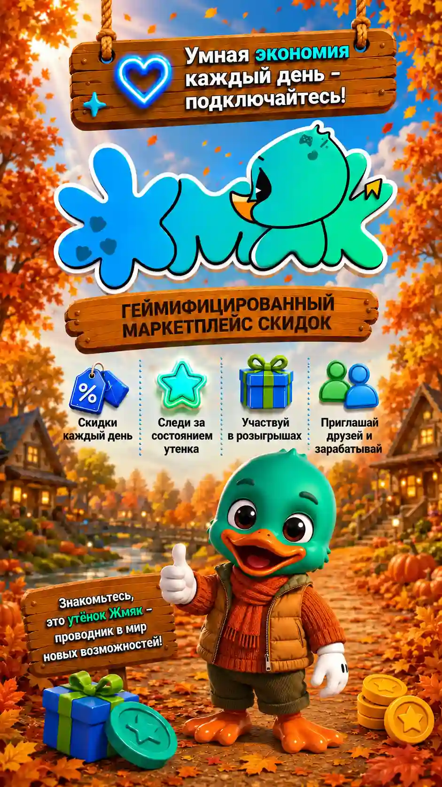
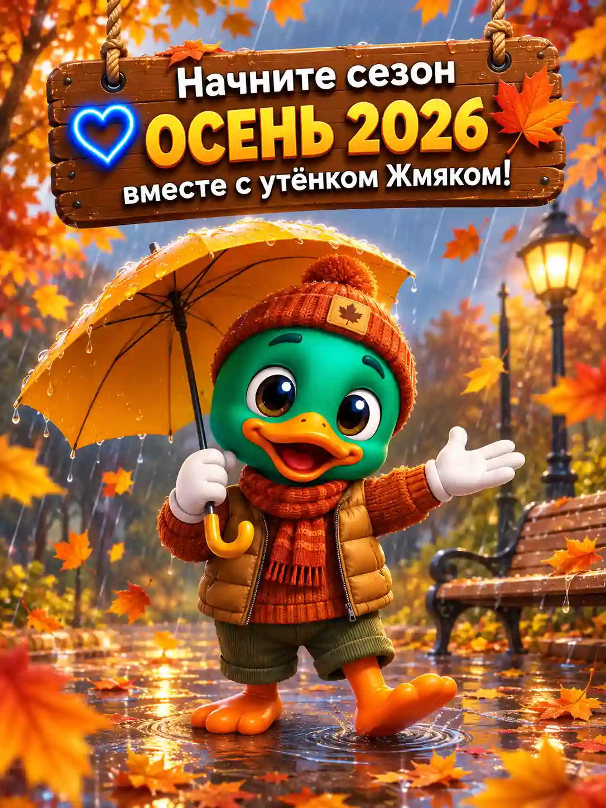
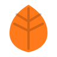
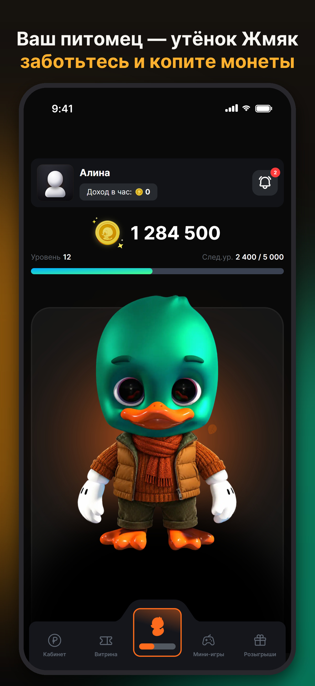
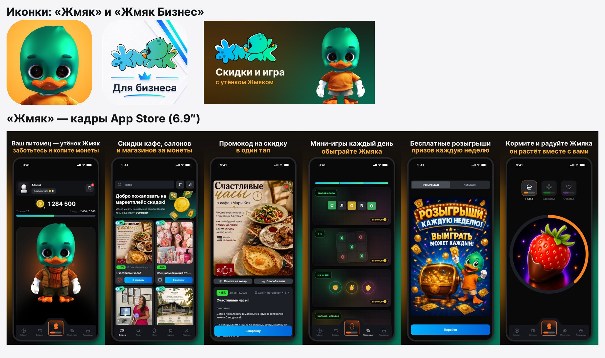
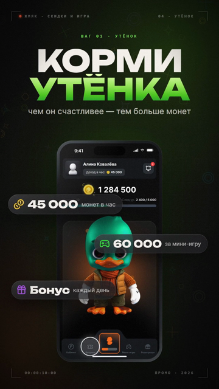

Полный проход по всем проектам в D:\MyWorks\zhmyak: все растровые ассеты (~400 уникальных файлов: персонаж, баннеры, еда, лекарства, мини-игры, бизнесы, лендинг, иконки приложений, сторы, промо-видео) просмотрены глазами, плюс поиск по коду (autumn / leaf / осень / шарф / сезон). Ниже — что осеннее, где лежит, где используется, и зимний черновик для каждого.
Пути относительно D:\MyWorks\zhmyak. Во всех четырёх фронтах файлы побайтно одинаковые (проверено по MD5), поэтому меняется один файл → копируется в 4 места.
| # | Файл и что в нём осеннего | Где лежит → где используется | |
|---|---|---|---|
| 1 |
ассетZhmyak_autumn.webp · 910×1450 · 93 КБ · прозрачный фон
Главный персонаж на домашнем экране. Стёганый жилет, рыжий вязаный свитер и шарф, вельветовые шорты.
|
Несезонная база рядом:
ZhmyakOrange.webp (оранжевая футболка) — из неё же делаются иконки и кадры для сторов. |
|
| 2 |  |
ассетloading_banner_autumn.webp · 941×1672 · 93 КБ
Сплэш при запуске. Рыжие клёны, листопад, тыквы, осенняя деревня, Жмяк в жилете и шарфе.
|
Несезонная база рядом:
loading_banner.webp. |
| 3 |  |
ассетstart_new_season.webp · 1086×1448 · 82 КБ
Модалка «Начать новый сезон». Надпись «Начните сезон ОСЕНЬ 2026», зонт, дождь, кленовые листья, шапка с кленовым листом.
|
Имя файла не сезонное, а картинка — сезонная. При следующей смене сезона его легко пропустить.
|
| 4 |  |
эффектПадающие листья на Жмяка · inline SVG, отдельного файла нет
8 листьев постоянно падают по карточке персонажа, плюс 3 листа разлетаются при каждом тапе по Жмяку. Цвета — оранжевые
LEAF_TINTS. |
Папка
components/character/autumn/ есть во всех 4 фронтах. |
| 5 |  |
производноеСкриншоты «Главная» для App Store и Google Play
Сняты с осенним Жмяком. Остальные кадры для сторов — без персонажа или с несезонным.
|
|
| 6 |  |
производноеpreview-zhmyak.jpg · коллаж для сторов
Первый кадр App Store в коллаже — осенний Жмяк.
|
|
| 7 |  |
производноеПромо-ролик 9:16 · сцена «Корми утёнка», ~0:08–0:11
В мокапе телефона — осенний Жмяк. Интро и финал — несезонный Жмяк в футболке.
|
Второй ролик (для бизнеса) — без осени. |
Файлы after/*.webp — того же размера, что оригиналы, готовы к подмене. after/*.png — без потерь, для доработки. Сырые генерации и скрипт сборки лежат в _work/.
img в Character.jsx фиксированная высота (h-[46vh] max-h-[420px]), и всё, что добавляет высоты, уменьшает голову на экране.img примерно на 25% (≈ h-[57vh] max-h-[525px]) и проверить, что карточка h-[70vh] это выдерживает.Повторяет вёрстку #duckContainer из Character.jsx: те же keyframes leafFall / leafBurst, тот же генератор частиц (mulberry32, seed 1), те же 8 частиц фоном и 3 на тап. Тапни по Жмяку.
Это не ассеты приложения, а снимки и ролики, где уже запечён осенний Жмяк. Перерисовывать их не надо: после подмены картинок они пересобираются.
Снимки делаются с _tools/web-ref, поэтому сначала подмени Zhmyak_autumn там, потом:
node D:/MyWorks/zhmyak/_tools/visual-qa/store-shots.cjs
cd D:/MyWorks/zhmyak/zhmyak-mobile-app
python scripts/store/store_frames.pyОбновятся iOS 6.9″ и Android 9:16. Иконки и feature graphic собираются из ZhmyakOrange.webp — они несезонные, их не трогаем.
Собрать заново из новых кадров для сторов. Если коллаж уже ушёл ревьюерам Apple/Google, менять не обязательно.
В мокапе телефона — скриншот главной с осенним Жмяком. Нужен новый скриншот в монтаж (подойдёт 01_home.png после пересъёмки) и перерендер. Остальные сцены несезонные.
QA-кадры главной в _tools/visual-qa/shots/ (web/home.png, native/home.png и их пары) тоже с осенним Жмяком, но это рабочие артефакты сверки — пересоздаются при следующем прогоне.
Одни и те же правки × 4 фронта: zhmyak-web-app, zhmyak-mobile-app, web-entry/demo, _tools/web-ref (последний — эталон для скриншотов сторов, его тоже надо обновить).
// src/pages/Character.jsx
import ZhmyakImg from "/images/character/Zhmyak_winter.webp"; // было Zhmyak_autumn.webp
// src/pages/StartLoadingScreen.jsx
import LoadingBanner from "/images/commons/loading_banner_winter.webp"; // было loading_banner_autumn.webp
// src/components/character/SeasonStartModal.jsx
import SeasonStartImg from "/images/commons/start_new_season_winter.webp"; // было start_new_season.webpВ mobile пути через алиас @assets/images/..., в web-entry/demo — строки "/images/..." (файлы кладутся в web-entry/public/images/).
Веб (zhmyak-web-app, web-ref, web-entry/demo):
const ARM = "M12 12V2.6M12 5.4 9.9 3.5M12 5.4l2.1-1.9M12 8.5 9.5 6.6M12 8.5l2.5-1.9";
const ANGLES = [0, 60, 120, 180, 240, 300];
function Snowflake({ tint, size = 24, className = "", style }) {
return (
<svg width={size} height={size} viewBox="0 0 24 24" fill="none" className={className} style={style} aria-hidden="true">
<g stroke={tint} strokeWidth="1.6" strokeLinecap="round" strokeLinejoin="round">
{ANGLES.map((deg) => (
<path key={deg} d={ARM} transform={`rotate(${deg} 12 12)`} />
))}
</g>
<circle cx="12" cy="12" r="1.3" fill={tint} />
</svg>
);
}
export default Snowflake;Mobile (react-native-svg, как в текущем Leaf.jsx):
import Svg, { Circle, G, Path } from "react-native-svg";
const ARM = "M12 12V2.6M12 5.4 9.9 3.5M12 5.4l2.1-1.9M12 8.5 9.5 6.6M12 8.5l2.5-1.9";
const ANGLES = [0, 60, 120, 180, 240, 300];
function Snowflake({ tint, size = 24, className = "", style }) {
return (
<Svg width={size} height={size} viewBox="0 0 24 24" fill="none" className={className} style={style} aria-hidden="true">
<G stroke={tint} strokeWidth={1.6} strokeLinecap="round" strokeLinejoin="round">
{ANGLES.map((deg) => (
<Path key={deg} d={ARM} rotation={deg} origin="12, 12" />
))}
</G>
<Circle cx={12} cy={12} r={1.3} fill={tint} />
</Svg>
);
}
export default Snowflake;Параметры для autumnConfig.js, как в превью выше: снег мельче, его больше, падает медленнее и заметнее на тёмном фоне:
export const LEAF_TINTS = ["#ffffff", "#e6f4ff", "#bfe3ff", "#9fd3ff"];
export const AMBIENT_LEAF_COUNT = 14;
export const AMBIENT_SIZE_MIN = 10;
export const AMBIENT_SIZE_MAX = 22;
export const AMBIENT_DURATION_MIN = 10;
export const AMBIENT_DURATION_MAX = 18;
export const AMBIENT_OPACITY_MIN = 0.35;
export const AMBIENT_OPACITY_MAX = 0.7;
export const BURST_LEAF_COUNT = 3;
export const BURST_LIFETIME_MS = 850;name: "Осенний сезон" в zhmyak-mobile-app/src/dev/fixtures.js:229 и _tools/web-ref/src/dev/fixtures.js:228 (там же ends_at: 2026-11-30). На проде название приходит с бэка.{ duck, splash, seasonStart, Particle, tints } в один seasonTheme.js и выбирать по константе или по дате. Тогда весна = один новый объект в одном файле.autumn/ лучше назвать нейтрально (seasonFx/), а AUTUMN_ENABLED → SEASON_FX_ENABLED, чтобы зимой в коде не висело «autumn».Просмотрено глазами по контактным листам. Лишний раз трогать не нужно.
character/foodcharacter/medicines (пакет со снежинкой — это хладопакет, не сезон)public/images/business